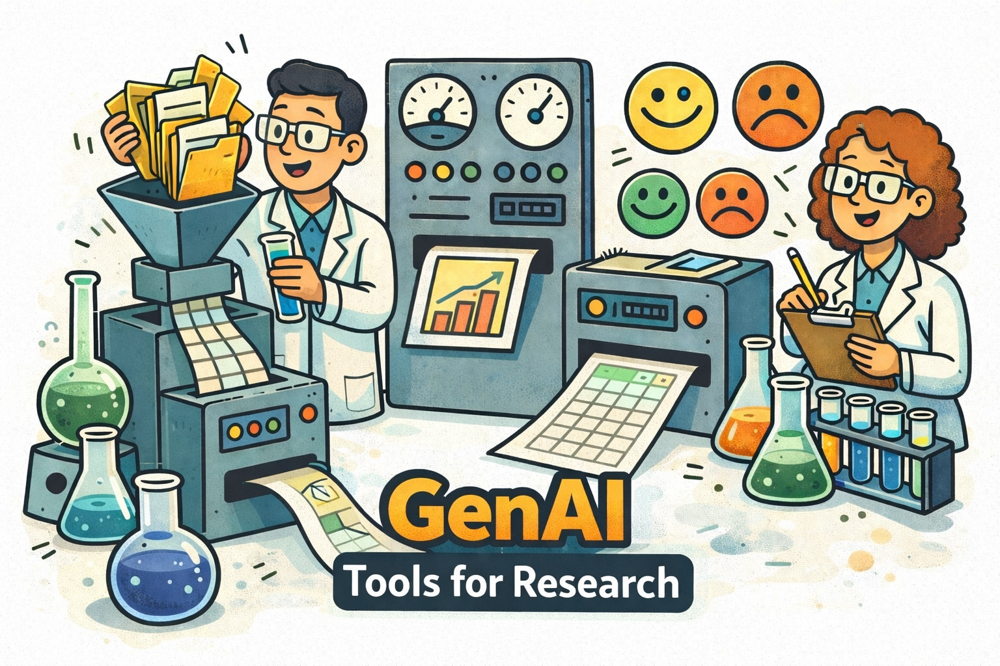
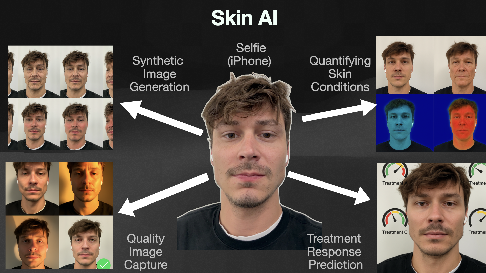
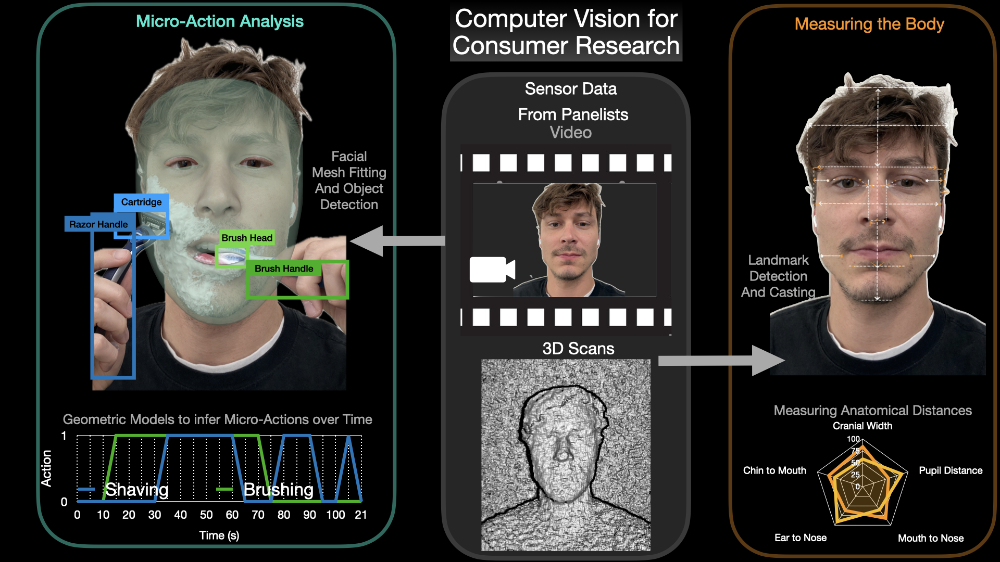
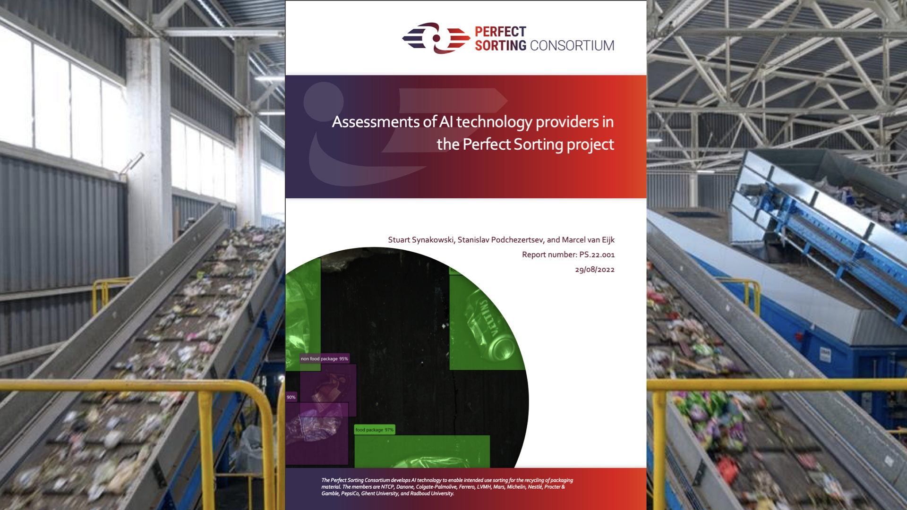
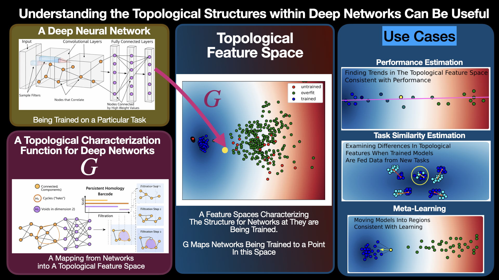
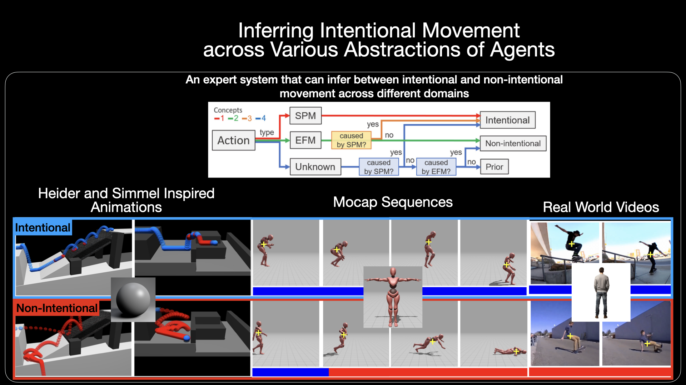
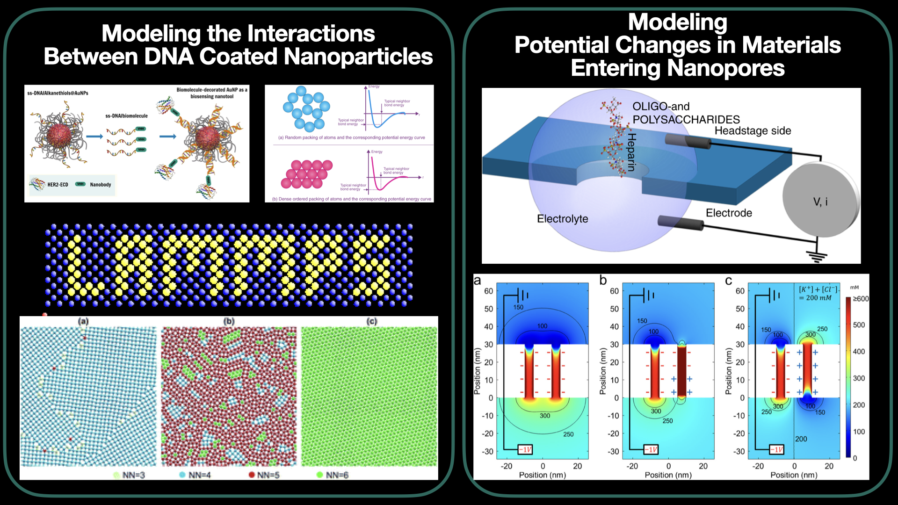

About Me:
I'm an applied-scientist focusing on computer vision, machine learning, and GenAI orchestrations. In other words... I build AI tools. I also really enjoy physics and math.
I am a first-principles thinker who ships working prototypes. I love collaborating with smart, hardworking people. I enjoy seeing my projects bring value to people. I also like writing short python scripts that outperform deep learning models.
Currently: Corporate R&D at Procter and Gamble
Focus: Applied ML / Computer Vision / GenAI Platforms and Tools
Values: integrity, curiosity, humility, initiative, sincere attempts at excellence, humor
How I Work
Start from first principles; measure what matters; ship iteratively. Prefer small, well-crafted tools that compound over time. Care about reliability, evaluation, and making results explainable to non-ML stakeholders.
Work Experience
-
 Senior Data ScientistProcter & Gamble R&D - Discovery and Innovation Platforms (2024–Present)
Senior Data ScientistProcter & Gamble R&D - Discovery and Innovation Platforms (2024–Present)Building Custom GenAI Platforms and Tools for Clinical Research/Consumer Research/Internal Knowledge Activation. I am also building Custom ML/CV tools to further our understanding of skin.
Data ScientistProcter & Gamble R&D Data & Modeling Sciences (2022–2024)Built CV systems for skin image quality, perception analysis, and behavioral quantification; delivered end-to-end from idea to deployment.
 Graduate ResearcherThe Ohio State University - Electrical and Computer Engineering (2017–2021)
Graduate ResearcherThe Ohio State University - Electrical and Computer Engineering (2017–2021)Conducted Research in computer vision & machine learning; also worked as a teaching assistant.
 NSF Physics REULehigh University (Summer 2016)
NSF Physics REULehigh University (Summer 2016)Computational Biophysics
 Undergraduate Researcher & Teaching AssistantClarkson University (2015–2017)
Undergraduate Researcher & Teaching AssistantClarkson University (2015–2017)Undergraduate Researcher - Computational Biophysics (2015–2017), Undergraduate Physics TA (2016–2017), and Calculus/DiffEq Tutor (2015).
Projects
I’ve had the chance to work on a pretty wide range of projects that sit at the intersection of research and real-world impact. Most of my work lives in AI, machine learning, and computer vision applied to accelerating research, but some of my AI research pull-ideas from cognitive science and topological data analysis. I also had the chance to work on some computational biophysics projects when I was younger.
What you’ll find below is a high-level snapshot of the kinds of things I’ve been working on. Each project links out to more detail where I can share it. This page is very much a work in progress — I’m always adding, refining, and occasionally re-thinking how I explain things.
Corporate R&D Projects
At P&G, my role has mostly been about exploring what’s new in AI and figuring out where it can actually create value for real business problems. Most of those problems live in accelerating clinical and consumer research.
In practice, that usually means building AI tools that help researchers move faster, scale their work, or see patterns they couldn’t easily see before. My typical workflow starts with deeply understanding how my collaborators already work — their processes, bottlenecks, and constraints — and then experimenting with AI techniques that might meaningfully improve those workflows.
I can’t share many of the details, but I try to give high-level overviews of the underlying ideas and approaches. The goal here isn’t to show off products, but to explain the concepts, trade-offs, and ways of thinking that drive the work.
GenAI tools Tailored for Value Creation in Clinical and Consumer Research
Large language models clearly accelerate research, but the path from utility to measurable value creation is still unclear. Tools like chatbots and vanilla RAG systems help with report generation and knowledge lookup, yet they are rarely integrated into the real workflows clinicians and product researchers use to drive impact.
I’ve found that measurable value emerges when domain experts can orchestrate LLMs directly within their existing processes. Much of my work focuses on building tools that democratize this orchestration—making advanced LLM capabilities accessible, reliable, and easy to use for non-technical experts.
In practice, this has enabled users to automate tedious text-processing tasks, mine and analyze massive datasets, extract and structure relevant information, and generate hypotheses at scale. These tools have proven especially effective for analyzing large volumes of consumer transcripts to surface patterns in customer sentiment and prioritize product improvements. They have also helped structure and consolidate decades of internal clinical research to support claims or develope/identify new research directions.
Key Themes
Democratizing LLM orchestration, building insight co-pilots for large-scale analysis, automated hypothesis generation, and ensuring reproducibility and interpretability in LLM outputs.
Read more about the concepts behind these GenAI toolsAI & Computer Vision for Skin Analysis
My work in this domain fuses computer vision, machine learning, consumer perception, clinical science, and dermatology. Essentially I am building AI tools to facilitate our understanding of skin. I have developed computer vision systems to quantify what actually matters to consumers. Iusing synthetic imagery to probe sensitivity and developing objective metrics for skin conditions. This pipeline extends to measuring product efficacy in clinical studies and scaling analysis through robust mobile imaging frameworks that enable lab-quality assessments from at-home selfies.
Key Themes
Synthetic skin generation, perceptual modeling, skin appearance metrics, mobile image quality and calibration, optics and color science, first-principles computer vision, and predictive modeling for treatment response — with a healthy dose of cognitive science mixed in.
Honestly, I’ve been working in this space long enough that I could probably teach a course or write a book on it. If any of this sounds interesting, check out the links below for higher-level explanations of the core ideas.
Read more about these projectsAI systems for Consumer Research
A lot of my work involves building CV systems to better understand consumer behavior and product interactions. I've built prototypes using iPhone LiDAR for body measurement applications, as well as computer vision pipelines to analyze fine motor actions in consumer usage videos.
Key projects include: iPhone Pro LiDAR Body-Measurement Prototype, Computer Vision Systems to Study Micro-Actions of Consumers.
Read more about these projectsAI systems for Consumer Research
A lot of my work involves building CV systems to better understand consumer behavior and product interactions. I've built prototypes using iPhone LiDAR for body measurement applications, as well as computer vision pipelines to analyze fine motor actions in consumer usage videos.
Key projects include: iPhone Pro LiDAR Body-Measurement Prototype, Computer Vision Systems to Study Micro-Actions of Consumers.
Read more about these projectsAI Research Projects
Machine Learning Research
Understanding the Structure of Deep Neural Networks that Learn | Graduate Research- Desired a framework to understand the structures consistent with learning in Deep Neural Networks (DNNs)
- Examined the structure of DNNs using Topological Data Analysis (TDA)
- Designed a novel topological characterization of DNNs: (available on arxiv)
- Demonstrated its applications in performance estimation, meta-learning, and task-similarity
Computer Vision Research
Higher-Level Action Analysis Research | Graduate Research- Desired an interpretable method to infer between intentional and non-intentional movement in videos
- Developed an unsupervised algorithm to detect non-intentional movement in videos using common knowledge
- Demonstrated algorithm can be applied to any agent, ranging from cartoons to humans
- Published work in The International Journal of Computer Vision, algorithm is now public (see github)
Physics Projects
Computational Models of Crystal Structures
NSF Physics REU Lehigh University 2016- Wanted to simulate DNA coated particles which can aggregate to form various crystal structures
- Wrote scripts in python and bash to model particle interactions in a computationally inexpensive manner
- Showed particular DNA configurations change the melting temperature of crystal structures
- Became proficient in python and bash to simulate particle interactions using XSEDE supercomputers
Computational Models of Dielectrics in Nanopore Sensors
Physics REU Clarkson University 2015- Desired a model of ionic current blockage of cylindrical nanopores due to nanoparticles.
- Constructed Models in COMSOL Multiphysics, a finite element solver to simulate ionic current flow
- Further developed analytical models to describing current flow in nanopore systems blocked by dielectric materials
- Described ionic current flow as a function of particle geometry, which has applications including DNA sequencing and filtering